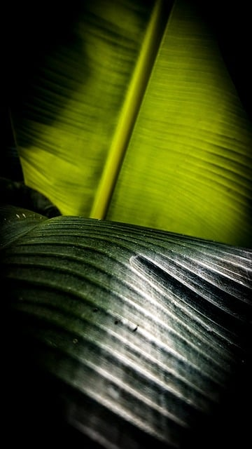

O que é a natureza
Em geral, a natureza em seu sentido mais amplo é o mundo natural, o mundo físico. Se refere à vida e aos elementos e fenômenos presentes no meio ambiente. Em geral, não inclui as obras e consequências das atividades humanas. A palavra provém do latim natura, que significa “qualidade essencial, disposição inata, o curso das coisas e o próprio universo”. Natura é a tradução para o latim da palavra grega physis (φύσις), que em seu significado original fazia referência à forma com que crescem espontaneamente plantas e animais.
Por que a natureza é importante
A natureza é fonte do ar que respiramos, da água que bebemos, da comida que consumimos, do combustível que utilizamos e de todas as matérias primas dos produtos que usamos todos os dias. É a partir do meio ambiente que obtemos todos os recursos necessários para a sobrevivência humana e de todos os outros seres vivos.